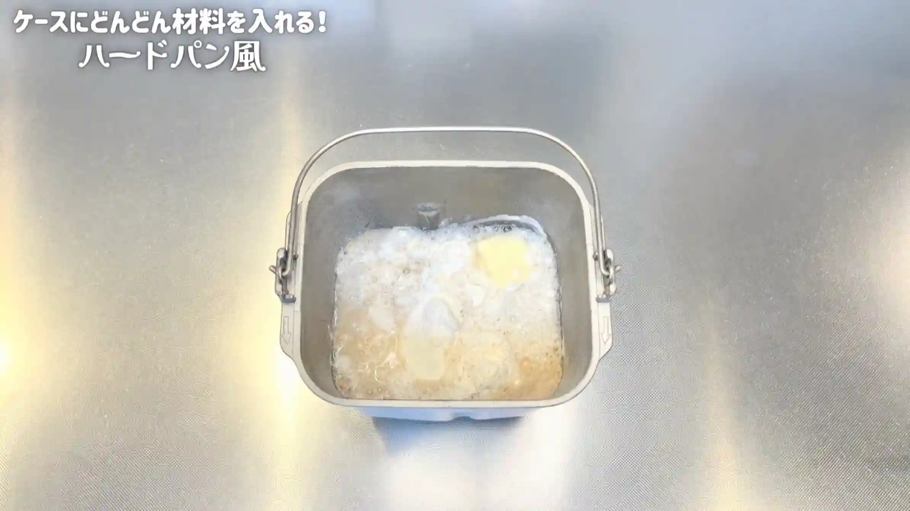
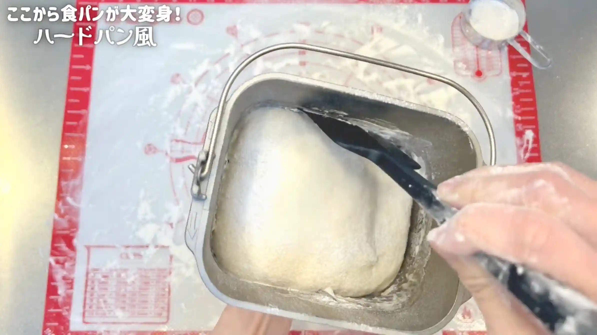
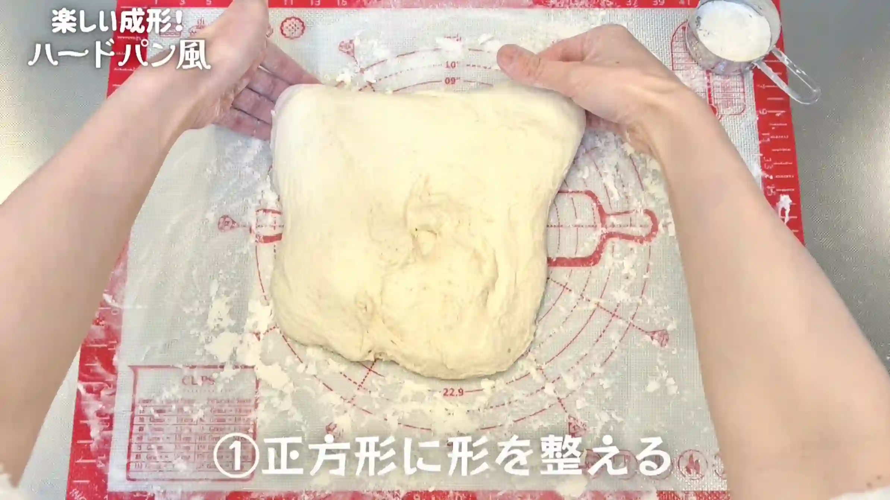
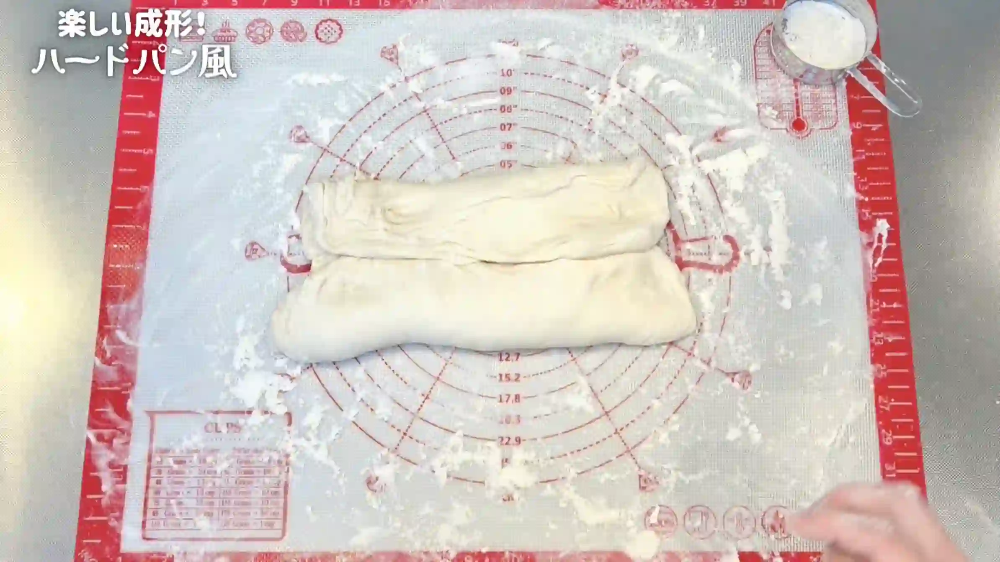
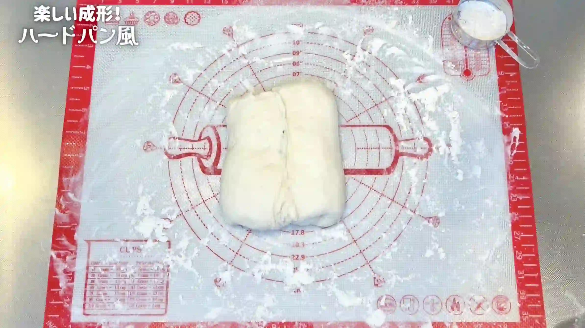
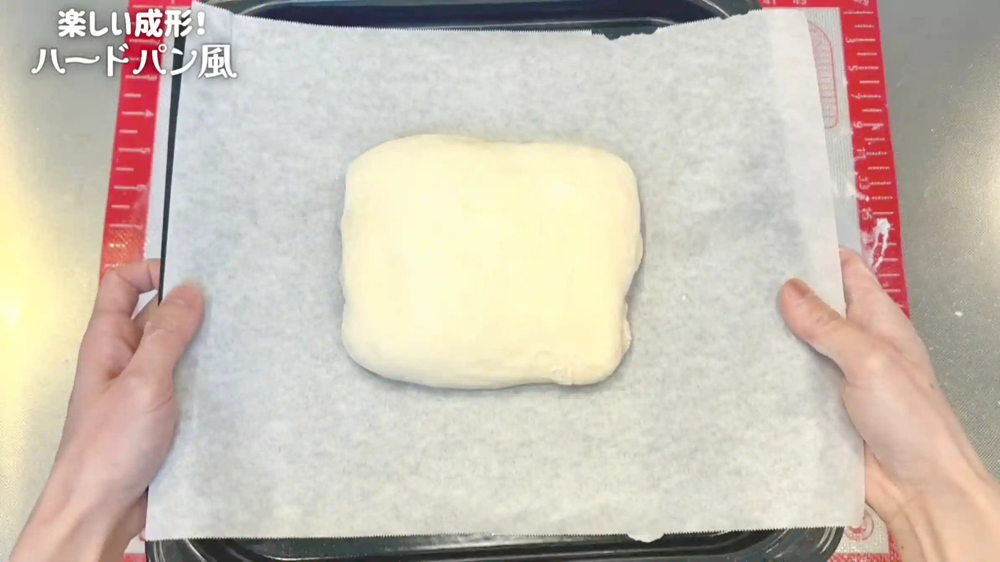
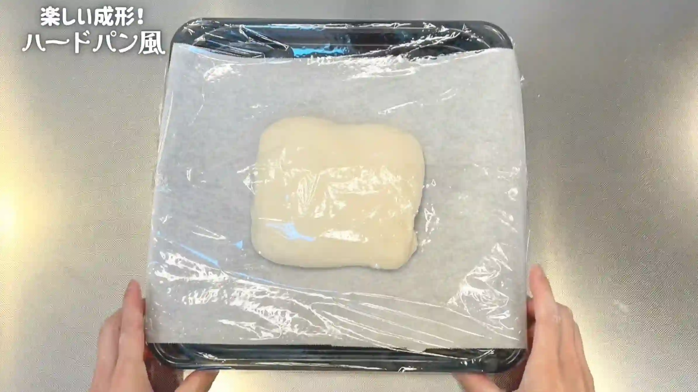
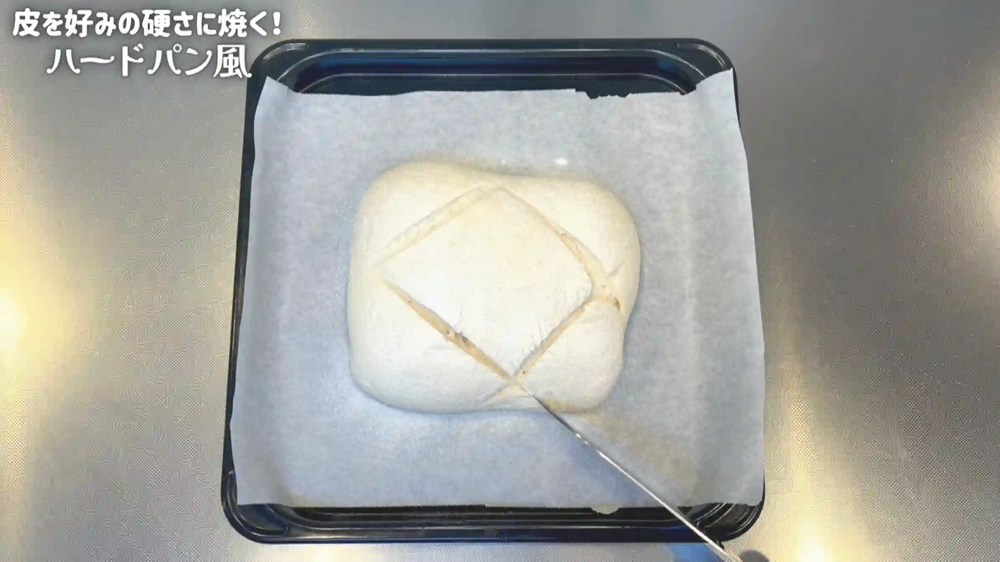
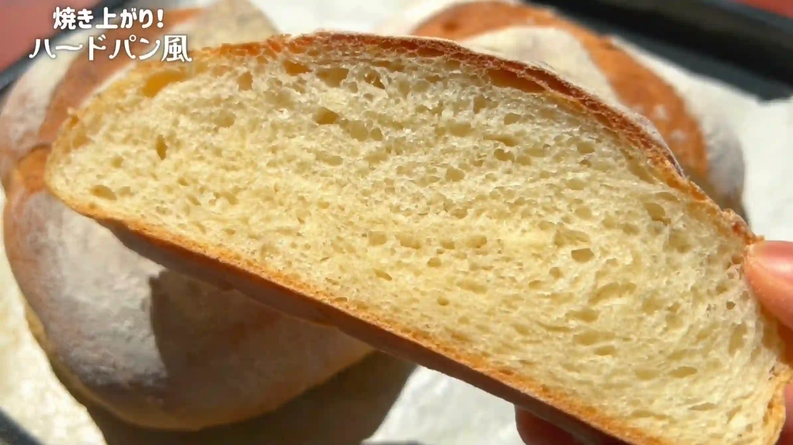

材料
※粉量を変えると自動計算されます
生地
作り方
生地
STEP 1
ホームベーカリーで生地を作る
ホームベーカリーに材料をセットして「生地コース」を選びます。今回は二次発酵を室温で行うため、ホームベーカリーに入れるお水は、冷水ではなく常温のものを使うと、発酵が安定しやすいのでおすすめです。
ホームベーカリーに材料をセットして「生地コース」を選びます。今回は二次発酵を室温で行うため、ホームベーカリーに入れるお水は、冷水ではなく常温のものを使うと、発酵が安定しやすいのでおすすめです。

STEP 2
ケースから生地を取り出す（[動画 04:00]）
高加水の生地はとてもベタつくため、作業台と生地の表面に打ち粉を多めに振ってから取り出します。ケースに生地がくっついている場合は、無理に引っ張らず、ヘラでケースの縁から生地を剥がして取り出してください。
高加水の生地はとてもベタつくため、作業台と生地の表面に打ち粉を多めに振ってから取り出します。ケースに生地がくっついている場合は、無理に引っ張らず、ヘラでケースの縁から生地を剥がして取り出してください。

STEP 3
生地を正方形に広げる（[動画 05:30]）
打ち粉がついている生地の底面にやさしく手を入れ、中央から外側へ広げるように正方形に整えます。水分が多くベタつく生地なので、表面を直接触らず、無理に引っ張らないようにします。
打ち粉がついている生地の底面にやさしく手を入れ、中央から外側へ広げるように正方形に整えます。水分が多くベタつく生地なので、表面を直接触らず、無理に引っ張らないようにします。

STEP 4
生地の上下を折りたたむ（[動画 06:05]）
正方形に整えた生地を、まず上から中央に向かって折り、続けて下から中央に向かって折りたたみます。生地を押しつぶさず、やさしく折るのがポイントです。
正方形に整えた生地を、まず上から中央に向かって折り、続けて下から中央に向かって折りたたみます。生地を押しつぶさず、やさしく折るのがポイントです。

STEP 5
生地の左右を折りたたみ、閉じる（[動画 06:21]）
続けて左右から中央に向かって折りたたみます。最後に中央部分だけを閉じ、端は開けたまま四角く形を整えます。四方から折りたたむことで生地に程よい張りが生まれ、ハードパンらしい形に仕上がります。
続けて左右から中央に向かって折りたたみます。最後に中央部分だけを閉じ、端は開けたまま四角く形を整えます。四方から折りたたむことで生地に程よい張りが生まれ、ハードパンらしい形に仕上がります。

STEP 6
天板にのせる
折りたたんだ生地を、とじ目を下にして、オーブンシートを敷いた天板にのせます。生地がやわらかいため、形を崩さないようにそっと移動します。
折りたたんだ生地を、とじ目を下にして、オーブンシートを敷いた天板にのせます。生地がやわらかいため、形を崩さないようにそっと移動します。

STEP 7
室温で50分おく
乾燥しないようにラップをして、二次発酵させます。50分を目安に、生地がふっくらとひと回り大きくなってきたら焼成へ進みます。室温によって発酵時間が変わるため、生地の状態を見ながら調整してください。
乾燥しないようにラップをして、二次発酵させます。50分を目安に、生地がふっくらとひと回り大きくなってきたら焼成へ進みます。室温によって発酵時間が変わるため、生地の状態を見ながら調整してください。

STEP 8
オーブンを210℃に予熱する
生地を焼く前に、オーブンを210℃に予熱しておきます。
生地を焼く前に、オーブンを210℃に予熱しておきます。
STEP 9
粉を振り、クープを入れる
生地の表面に強力粉を振り、クープを入れます。粉を振ることで焼き上がりの表情が出やすくなり、クープを入れることで焼成時の生地の膨らみを逃がしやすくします。
生地の表面に強力粉を振り、クープを入れます。粉を振ることで焼き上がりの表情が出やすくなり、クープを入れることで焼成時の生地の膨らみを逃がしやすくします。

STEP 10
オーブン210℃で30分焼く
210℃で30分を目安に、表面が香ばしく色づくまで焼きます。焼き時間は目安とし、焼き色を確認しながら、ご家庭のオーブンに合わせて調整してください。
210℃で30分を目安に、表面が香ばしく色づくまで焼きます。焼き時間は目安とし、焼き色を確認しながら、ご家庭のオーブンに合わせて調整してください。

動画でチェック
おいしく作るためのワンポイントコラム
こんにちは、おなおドーナツです！
いつもの食パンの材料なのに、外は香ばしく中はしっとりな『ハードパン風』に変身するパンって、素敵ですよね！今回はホームベーカリーで生地作りをするため、「ハードパンってなんだか難しそう…」と敬遠されていた方にも、気軽に作っていただけると嬉しいです。焼き上がりは決してSNS映えするとは言えず、見た目は無骨な仕上がりですが、とにかく美味しく焼き上がります。
それでは、ホームベーカリーでハードパン風を焼く3つのコツをまとめました。
① しっとり食感のコツ
ハードパン風のしっとり感を出すポイントは、お水を多めに仕込むことです。水分量を引き上げることで独特の潤いのある内相に近づきます。ただ、お水が多いと生地がベタベタになって手捏ねは大変なので、ホームベーカリーの生地コースにお任せします。生地コースで作る時は、冷水ではなく常温のお水を使うと発酵が安定しやすいのでおすすめです。
② あえてのお砂糖とバター
本格的なハードパンのレシピでは、ゆっくり発酵させることで小麦の旨みをしっかり引き出すため、お砂糖を加えないレシピも多いですが、このレシピではあえて食パン同様に投入します。これを入れることで、ハード風の食感を楽しみつつも、まろやかで食べやすい味わいになります。また焼き上がったパンを冷凍してもパサつかずしっとりが長続きします。本格的なハードパンほどの旨みはないですが、そこはバターで補いつつ、作る手間やお手軽さを重視していますね。
③ ベタつきを回避する「成形のコツ」
高加水な生地はとにかくベタつきます。取り出す時は台やヘラに強力粉を広範囲に多めに振っておくのがポイントです。そして、打ち粉がない生地の表面には絶対に触らないこと！水分が多い生地は少しでも触れると手がベタベタになってしまうため、粉がついている底面に優しく手を入れて正方形に整えたら、四方から4回折りたたむだけでOKです。真ん中だけを閉じ、端は開けたまま四角く整えることで、生地に程よい張りが生まれ、まるでハードパンのように仕上がります。
焼きたてをスライスして、バターをのせればおご馳走！冷凍してもしっとり感が続き、朝食のパンとしてもおすすめです！それでは、おうちパン作りの時間を一緒に満喫しましょう！
いつもの食パンの材料なのに、外は香ばしく中はしっとりな『ハードパン風』に変身するパンって、素敵ですよね！今回はホームベーカリーで生地作りをするため、「ハードパンってなんだか難しそう…」と敬遠されていた方にも、気軽に作っていただけると嬉しいです。焼き上がりは決してSNS映えするとは言えず、見た目は無骨な仕上がりですが、とにかく美味しく焼き上がります。
それでは、ホームベーカリーでハードパン風を焼く3つのコツをまとめました。
① しっとり食感のコツ
ハードパン風のしっとり感を出すポイントは、お水を多めに仕込むことです。水分量を引き上げることで独特の潤いのある内相に近づきます。ただ、お水が多いと生地がベタベタになって手捏ねは大変なので、ホームベーカリーの生地コースにお任せします。生地コースで作る時は、冷水ではなく常温のお水を使うと発酵が安定しやすいのでおすすめです。
② あえてのお砂糖とバター
本格的なハードパンのレシピでは、ゆっくり発酵させることで小麦の旨みをしっかり引き出すため、お砂糖を加えないレシピも多いですが、このレシピではあえて食パン同様に投入します。これを入れることで、ハード風の食感を楽しみつつも、まろやかで食べやすい味わいになります。また焼き上がったパンを冷凍してもパサつかずしっとりが長続きします。本格的なハードパンほどの旨みはないですが、そこはバターで補いつつ、作る手間やお手軽さを重視していますね。
③ ベタつきを回避する「成形のコツ」
高加水な生地はとにかくベタつきます。取り出す時は台やヘラに強力粉を広範囲に多めに振っておくのがポイントです。そして、打ち粉がない生地の表面には絶対に触らないこと！水分が多い生地は少しでも触れると手がベタベタになってしまうため、粉がついている底面に優しく手を入れて正方形に整えたら、四方から4回折りたたむだけでOKです。真ん中だけを閉じ、端は開けたまま四角く整えることで、生地に程よい張りが生まれ、まるでハードパンのように仕上がります。
焼きたてをスライスして、バターをのせればおご馳走！冷凍してもしっとり感が続き、朝食のパンとしてもおすすめです！それでは、おうちパン作りの時間を一緒に満喫しましょう！


ホームベーカリーで手軽に生地作り！いつもの食パンと同じ材料なのに、外は香ばしく中はしっとりな『ハードパン風』のレシピです！いつもの味が、成形や水分の工夫でガラリと大変身します。コラムでは、ハードパン風を手軽においしく作るための「しっとり食感のコツ」「あえてのお砂糖とバター」「成形のコツ」の３つをご紹介します。